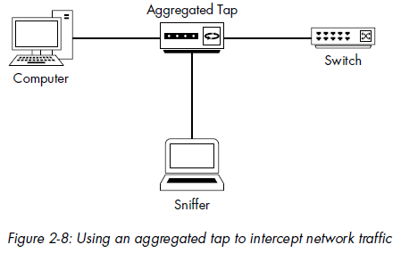
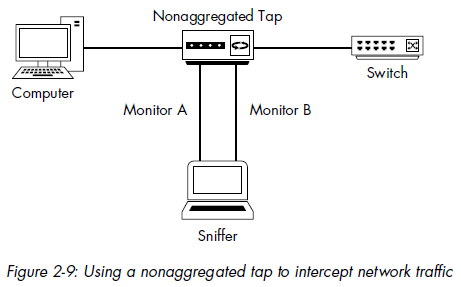
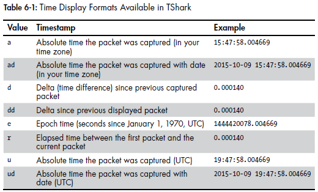

Promiscuous mode
you need a network interface card (NIC) that supports a promiscuous mode driver. Promiscuous mode is what allows a NIC to view all packets crossing the wire.
Normally if the packet is not destined for the device (with correct MAC address), the device’s NIC discards the packet. In promiscuous mode, the NIC passes every packet it sees to the host’s processor, once the packet makes it to the CPU, a packet-sniffing application can grab it for analysis.
Sniffing a switch
When you connect a sniffer to a port on a switch, you can see only traffic on that port and broadcast traffic. There are four primary ways to capture this traffic: port mirroring, hubbing out, using a tap, and ARP cache poisoning.
Port mirroring
Port mirroring, also called port spanning. Configure the switch to copy all traffic on one port to another port. Some switches allow you to mirror multiple ports to one port.
Hubbing out
Since traffic sent through a hub goes through every port connected to that hub, you can place the target device and your analyzer system on the same network segment by plugging them both directly into a hub.
In most situations, hubbing out reduces the duplex of the target device from full (bi-directional) to half (one-directional).
Using a Tap
A network tap is a hardware device that you can place between two points on your cabling system to capture the packets between those two points. Rather than using a hub, you use a specialized piece of hardware designed for network analysis.
There are two primary types of network taps: aggregated and nonaggregated.
 
ARP Cache Poisoning
ARP cache poisoning, sometimes called ARP spoofing, It works by sending ARP messages to an Ethernet switch or router with fake MAC (layer 2) addresses in order to intercept the traffic of another computer.
capture
$ tcpdump -i eth4 -w /tmp/out.tcpdump
print format:
$ tcpdump -Xr packets.pcap # -X prints hex and ASCII
$ tcpdump -xr packets.pcap # -x prints only hex
$ tcpdump -AXr packets.pcap # -X prints only ASCII
name resolution:
–n will disable IP name resolution–nn will disable port name resolution as well.filters:
$ tcpdump –nni eth0 –w packets.pcap 'tcp dst port 80'
Refer to this.
tcpdump create socket via socket(AF_PACKET, SOCK_RAW, ...) system call, there is a hook in ptype_all in kernel, tcpdump registers virtual protocol into ptype_all. When receving/sending packet, the kernel (network layer code) will iterate all protocols in ptype_all, and calls its callback
A simple hand-written tcpdump: https://github.com/yanfeizhang/coder-kung-fu/blob/main/tests/network/test04/main.c
Wireshark offers two main types of filters:
Capture filter examples:
| filter | description |
|---|---|
| `[src | dst] host 172.16.16.149` |
| `[src | dst] port 8080` |
src host 192.168.0.10 && port 80 |
combine above two |
icmp or !ip6 |
filter by protocol |
| `icmp[0] == 8 | |
icmp[0:2] == 0x0301 |
test two bytes |
tcp[13] & 4 == 4 |
TCP header byte 13 is FLAG, this filters only RST flag |
tcp[13] & 2 == 2 |
see all SYN packets. |
ether host 00:00:00:00:00:00 |
Traffic to or from your MAC address |
broadcast |
Broadcast traffic only |
Display Filters
[!] protocol.feature.subfeature [==|!=|>|<|>=|<=] value [and|or|xor|nor] (next filter)
Display Filters Examples:
| filter | description |
|---|---|
!tcp.port==3389 |
Filter out RDP traffic |
tcp.flags.syn==1 |
TCP packets with the SYN flag set |
tcp.flags.reset==1 |
TCP packets with the RST flag set |
!arp |
Filter out ARP traffic |
http |
All HTTP traffic |
| `tcp.port==23 | |
| `smtp | |
tshark options:
read a file
-r file_name
add display filter (used when reading the capture, the filter should be same as wireshark filter)
-Y "frame.len == 98" # normally just use -Y if tshark version is not too old
-Y ‘frame.len == 98 && ip.id == 0x1234’ # multiple matching filters
-R <filter> -2 -Y <2nd filter> #two pass filter
add capture filter (only used in capturing traffic)
-f "tcp port 80"
print fields (-e can repeat)
-T fields -e field_name1 -e field_name2 -e ...
print fields with format (can repeat)
-E header=y -E separator=,
to see all field names
-T pdml
-V # detail output
-P # summary output
-t a # -t controls timestamp in summary output, eg -t ad

-n disable name resolution
-N can enable or disable certain aspects of name resolution
tshark -Nt # enable only transport layer (port name) resolution, all other name resolutions are disabled
tshark -Ntm # enable transport layer and MAC resolution, other name resolutions are disabled
-x # output hex in detail and summary output
-c <number> # output for
-z # stats command
-z conv,udp # see udp traffic stats
-z http,tree # see a breakdown of HTTP requests and responses in table form.
-z io,stat,5 # see io stats at 5 second interval
Display capture file info
capinfos <filename>
Ex: Arista meta connect (Company Metamako was acquired by Arista in Sep 2018)
Arista Networks has released the first fruits of its acquisition of Metamako in September 2018. The Arista 7130L Series, a next generation ultra-low latency, high-precision network application platform with deterministic 5 nanosecond switching and virtually undetectable jitter, rebrands former Metamako FPGA switches. It also consolidates and advances network applications MetaMux, which enables lower latency data aggregation and is ideal for connecting electronic trading platforms directly to exchanges, and MetaWatch, which can be used to tap and aggregate time-stamped packets for data analysis or compliance.
The Arista 7130 series reduces the cut through latency from 380 nanoseconds experienced with the Arista 7150 series, to between 5 nanoseconds and 45 nanoseconds depending on operating mode.
Ex: Exablaze Fusion, can be L1/L2
Crosspoint switches do not allow for the connection of multiple inputs to a single output, that is, they do not allow packets from multiple links to be aggregated into a single link. (sometimes called muxing or multiplexing). This means that there is hence no need to buffer any packets, as this is just a simple ‘one in/one out’ approach, packets pass through at close to the speed of light (or 1metre in 3.3 ns)
Another benefit of crosspoints is that they can connect a single input to more than one output at a time without introducing any overhead. This means that a physical layer crosspoint switch can broadcast data to many ports at the same time.
Latencies (provided by vendor)
Ex: Cisco Nexus 3548 - 250ns forwarding latency
Ex: Arista 7150 is L2/3/4, can used as TapAgg - 350ns forwarding latency
Whereas a store-and-forward switch makes a forwarding decision on a data packet after it has received the whole frame and checked its integrity, a cut-through switch engages in the forwarding process soon after it has examined the destination MAC (DMAC) address of an incoming frame.
Store-and-Forward Ethernet Switching
Cut-Through Ethernet Switching
With cut-through switching, the LAN switch copies into its memory only the destination MAC address, which is located in the first 6 bytes of the frame following the preamble. The switch looks up the destination MAC address in its switching table, determines the outgoing interface port, and forwards the frame on to its destination through the designated switch port.
Unlike store-and-forward switching, cut-through switching flags but does not get a chance to drop invalid packets. Packets with physical- or data-link-layer errors will get forwarded to other segments of the network. Then, at the receiving end, the host invalidates the FCS of the packet and drops the packet.